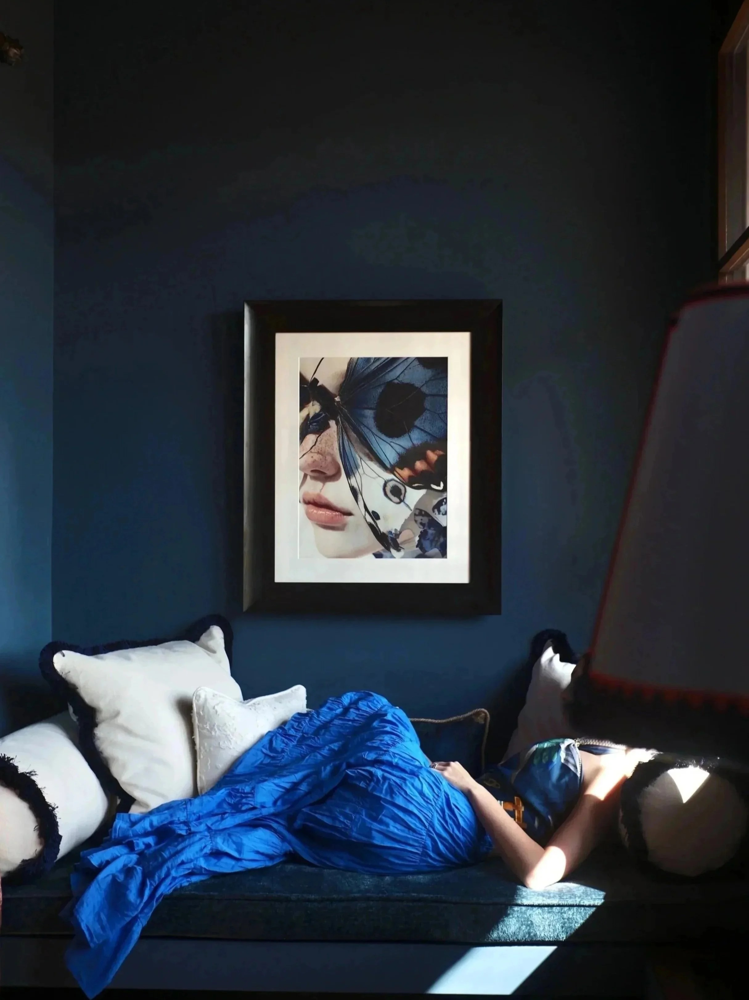
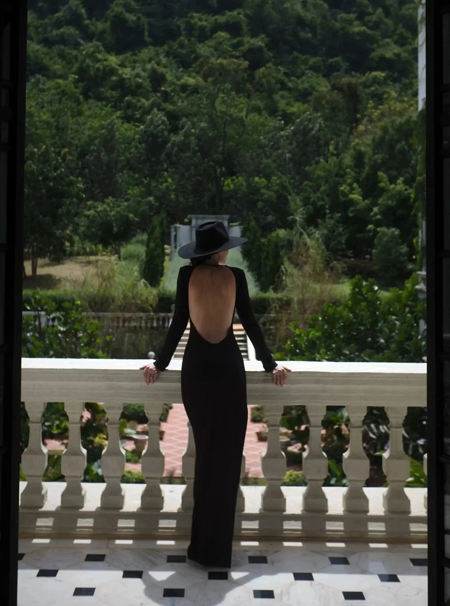
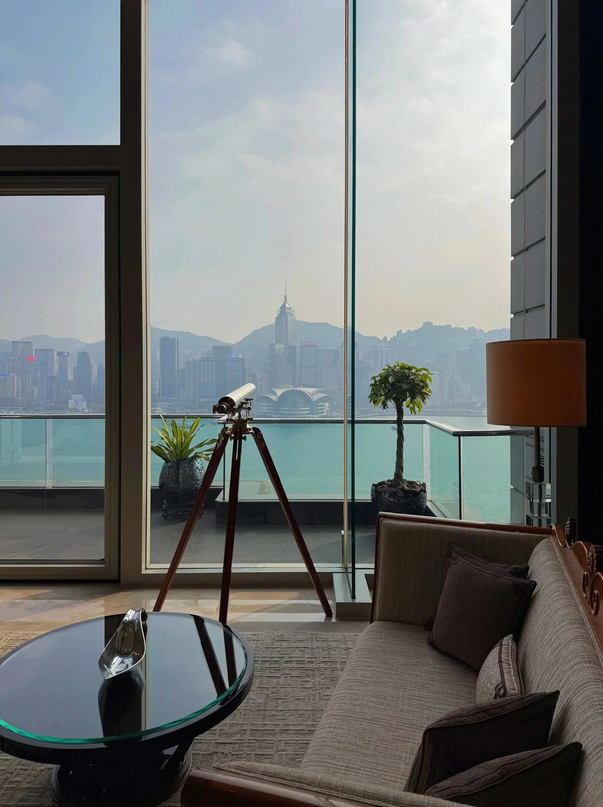

Tokyo in October carries a particular electricity. The city transforms during fashion week, drawing buyers and editors from every continent. Three hotels understand this season. Each operates on a different principle, yet all three share an unspoken recognition that the visitor during this week expects precision, discretion, and a lobby that doesn't perform.
The Park Hyatt Tokyo operates from the skyline. The hotel sits on the forty-ninth floor of an office tower in Shinjuku, surveying the city below. The view erases context. From this height, Tokyo becomes abstract and ordered. Guests experience the city as pattern rather than chaos. The design of the property follows a philosophy of understatement. The lobby receives light through expansive windows. The rooms assume guests will spend time looking outward.
The Aman Tokyo interprets luxury through the language of Japanese tradition. The property occupies a contemporary building but conducts itself with the restraint of a ryokan. The spaces breathe. The materials speak quietly. Stone, wood, and negative space do the work that unnecessary detail might otherwise occupy. During fashion week, the corridors move with the deliberate rhythm of people who understand that comfort means being left alone.
The Bulgari Hotel Tokyo presents a different argument. The property embraces its modernity. The design celebrates clean geometry and Italian craftsmanship. The lobby announces itself. High ceilings, marble surfaces, and architectural precision create an environment where refined luxury doesn't apologize. Guests here appreciate the performance of elegance. The surrounding neighborhood in Ginza reinforces this aesthetic. The streets outside conduct the same conversation about quality and intention.

Tokyo hotel interior. Photography courtesy of worldofsplendid.com
The October calendar
Fashion week in Tokyo operates on its own schedule. The shows cluster across ten days in mid-October. The calendar creates natural rhythms. Editors arrive Monday morning, depart Friday evening. The hotel functions as a base camp rather than a destination. The properties that succeed during this period understand that the guest's priority sits elsewhere. The hotel must operate as a sanctuary, a place where sleep is undisturbed and breakfast arrives exactly when requested.
The Park Hyatt occupies the highest altitude in the city. Returning to the lobby at ten in the evening, after spending the day in dark show venues, the sight of Tokyo below functions as recalibration. The lights of the city spread endlessly. The scale reasserts perspective.
Tokyo during fashion week demands a hotel that understands precision. Not spectacle. The city below remains enough.
Elena VossThe Ginza standard
Ginza during October maintains its typical pace. The department stores and luxury boutiques operate without acknowledgment of the week's significance. The Bulgari Hotel occupies this district. The location allows editors to move seamlessly between the show venues and the shopping streets. The property itself reflects the neighborhood. Luxury here means precision. The materials never apologize. The service operates with Swiss-like efficiency. Guests arriving for fashion week recognize immediately that the hotel shares their aesthetic priorities.

Ginza district, Tokyo. Photography courtesy of worldofsplendid.com
The Aman philosophy
The Aman Tokyo took seven years to open. The property emerged from a careful understanding of what Japanese hospitality might mean in a contemporary context. The design refuses ornament. Corridors are spare. Guest rooms feature views that matter. The design team eliminated everything except what contributes to the experience of being there. This philosophy aligns precisely with the sensibility of designers and editors arriving during fashion week. They have spent hours in bright show venues, examining detail and intention. Returning to the Aman, they encounter a space that reflects their own profession's principles. Silence means something here. Emptiness becomes the presence of quality.
Each of these properties occupies Tokyo differently. None attempt to replicate what exists elsewhere. The Park Hyatt courts the visitor who wants to experience the city from above, to understand its scale and pattern. The Bulgari speaks to the guest who understands luxury as precision and craftsmanship. The Aman addresses the visitor who has spent the week examining intention and respects a space that demonstrates the same rigor. During fashion week, Tokyo's hotels become extensions of the city's professional culture. They operate as sanctuaries for people who understand that true luxury means absolute clarity of purpose.

Tokyo at night. Photography courtesy of worldofsplendid.com
Photography courtesy of worldofsplendid.com